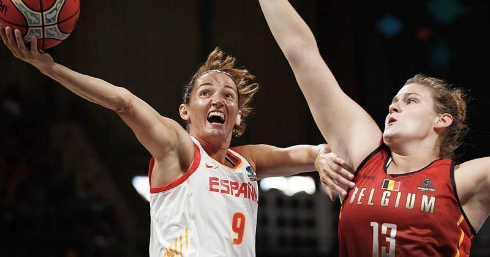

Суперниці збірної України назвали склад на чемпіонат Європи

Тренерський штаб жіночої збірної Іспанії оприлюднив розширений список з 17-ти гравців, які готуватимуться до чемпіонату Європи.
До ростеру чинних чемпіонів Європи не ввійшла MVP ЄвроБаскета-2017 Альба Торренс. Наразі вона травмована.
Збірна Іспанії
Тамара Абальде, Міра Конде, Ногайє Ло, Лая Палау, Марта Шаргай, Марія Араухо, Анна Крус, Асту Ндур, Марія Пінья, Джеорджина Баі, Сильвія Домінгес, Лаура Ніколс, Леонор Родрігес, Керальт Касас, Лаура Хіль, Кристіна Оувінья, Андреа Віларо.
Нагадаємо, збірна України гратиме на груповому етапі чемпіонату Європи з Іспанією, Латвією та Великою Британією. Змагання нашої групи проходитимуть в Латвії. Починатимуться саме поєдинком проти Іспанії 27 червня.